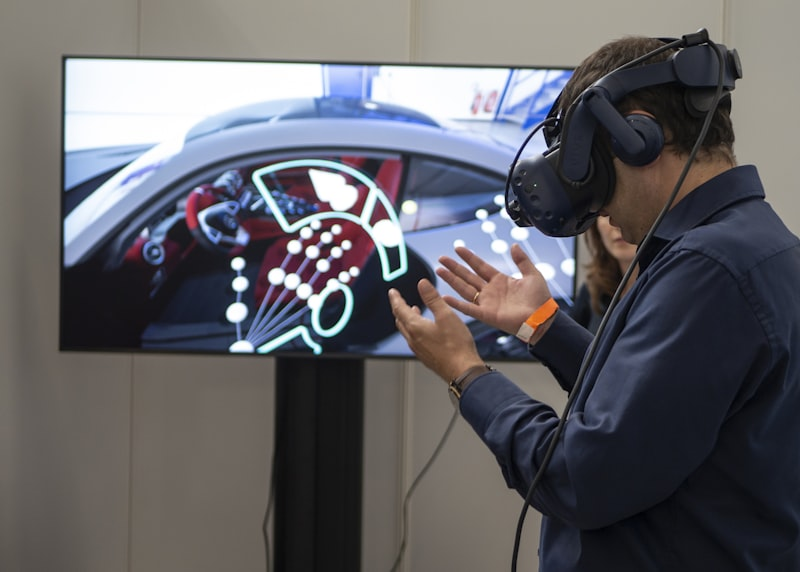

Capabilities
Comprehensive expertise across AI, platform engineering, simulation, and enterprise systems

AI & Automation
From image to insight.
Machine-learning pipelines, computer vision, and data analysis for industrial inspection and decision support.
- AI-powered infrastructure inspection (Crackz)
- Machine learning model development
- Natural Language Processing (NLP)
- Computer vision and image analysis
- Model lifecycle management (training, retraining, deployment)
- Integration with sensor and field data
- AI infrastructure and MLOps

System & Solution Architecture
Scalable systems from the ground up.
Hands-on architecture for complex enterprise systems with microservices, domain-driven design, and full-stack implementation.
- Microservice architecture design
- Identity Management Systems
- Domain-Driven Design (DDD)
- System integration and API design
- Frontend (React, Angular, Vue)
- Backend (Java, Python, Go, Node.js)
- Databases (MongoDB, Postgres, Cassandra)

Platform & DevSecOps
Secure. Automated. Repeatable.
Cloud-native infrastructure, IaC, and CI/CD pipelines for scalable, resilient systems across AWS, Azure, and GCP.
- Multi-cloud deployment (AWS, Azure, GCP)
- Kubernetes and Docker orchestration
- Infrastructure-as-Code and DevSecOps automation
- Secure CI/CD, GitOps, and observability
- CI/CD with Kafka and microservices
- Cloud, hybrid, and edge deployments
- Monitoring and security

Simulation & Digital Environments
Real-world precision in virtual form.
3D, Unreal Engine, and photogrammetry pipelines for simulation and visualization in defense and offshore domains.
- Unreal Engine development
- C++ game programming
- Photogrammetry and 3D data capture
- Digital twins and real-time rendering
- Underwater ROV simulation
- Interactive visualization systems
- Performance optimization

Mobile & IoT
Connected systems everywhere.
Full-stack mobile applications and IoT solutions from App Store deployments to embedded systems programming.
- iOS & Android apps (Swift, Kotlin, Flutter)
- IoT programming (Raspberry Pi, Arduino)
- App Store & Play Store deployment
- Cross-platform development
- Hardware integration
- C++ embedded programming

Government & Defense
Mission-critical security.
High-security government contracting and defense solutions with active security clearance for classified projects.
- Government contract delivery
- Classified systems development
- Security audits and compliance
- Defense sector architecture
- CTO and Tech Lead consulting
- High-security clearance systems
Drones & Autonomous Systems
Autonomous intelligence in the field.
Architecture and integration for drone systems, autonomous vehicles, and remote sensing platforms across defense, infrastructure, and maritime domains.
- Drone platform architecture and system integration
- Autonomous navigation and mission control
- Sensor fusion and real-time telemetry
- ROV and UAS system design
- Video and data uplink/downlink systems
- Edge AI for autonomous decision-making
- Ground control station development
Mesh Networking & Radio Integration
Resilient comms beyond the grid.
Off-grid communication systems using LoRa mesh networks, amateur radio protocols, and APRS integration for defense, field operations, and maritime applications.
- Meshtastic / LoRa mesh network deployment
- APRS position reporting and tracking
- BLE, USB serial, and MQTT transport integration
- HAM radio protocol bridging (pi-star, gpsd, rigtop)
- GPS telemetry pipelines and monitoring
- AES-128/256 encrypted channel configuration
- Cross-platform TUI monitoring tooling